Manual
Manual
Manual
Manual
When the "Simulate Model" button is clicked in US_FeMatch, a simulation is performed using the Edit data, a Loaded Model, and simulation parameters primarily created using the edit data set. A simulation data set is created that has the same ranges as the edit set, but with readings values that are calculated and compared to the actual experimental data. The comparison spawns a number of new dialogs and options that allow the user to evaluate the quality of the model.
The Simulation The simulation creates a data set with the same ranges as the edit experimental data set. The actual values for scan readings vectors are synthetically produced, as illustrated by the plot below.
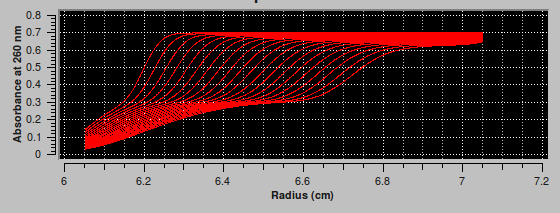
Overlay Plot Upon completion of simulation computations the plot of experimental data (in yellow and cyan) is overlayed in the main window lower plot with the simulation data (in red), as shown in the image below.
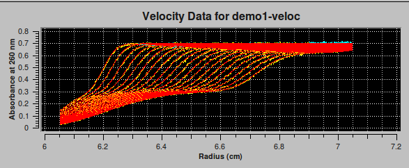
Residuals/Distributions Plots The upper main window plot is initially a plot of residuals (experimental minus simulation data). The button initially labelled "Residuals" then gets re-labelled. Each time the button is clicked, it produces the indicated plot and cycles its label to the next plot option. The 8 residual/distribution option buttons are shown below.
The initial
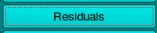
button produces the plot: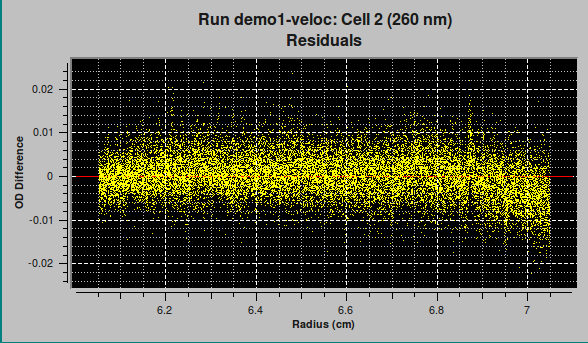
Each of the next three buttons in the cycle,
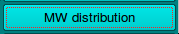
, produces a bar plot similar to the one below.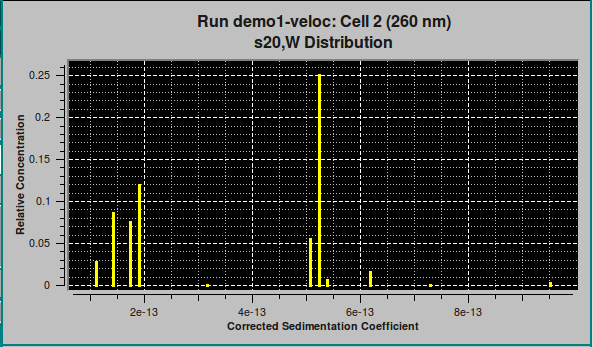
The final four buttons,
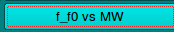
, produce 2-dimension distribution plots, as illustrated by: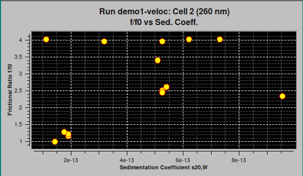
Residuals Bit Map Experimental-Simulation residuals are plotted in another way in a bit map. This small window represents each residual #Scans x #Readings point as a color: green where simulation is greater than experimental; red where experimental is greater. A random distribution of colors throughout the bit map is indication of a good model fit.
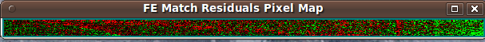
3-D Controls A 3-dimensional view of model data is controlled by a dialog launched after simulation computations. This dialog may also be launched at any time via the main window 3D Plot button. See Plot Controls Details.

Residual Plots Another dialog launched at simulation completion is one that presents a more advanced set of data/residuals/noise plots. It also may be launched at any time via the main window Residual Plot button. See Plot Controls Details.

Data Reports/Files The "Save Data" button produces a set of report files. One of these is displayable via the "View Report" button, which produces a dialog that shows the contents of a report. A dialog sample follows.
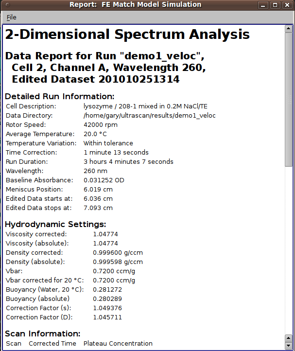
Below is the same sample scrolled down to the bottom, showing analysis settings and distribution information.
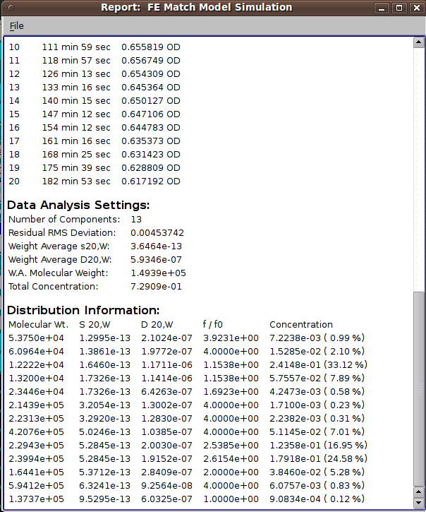